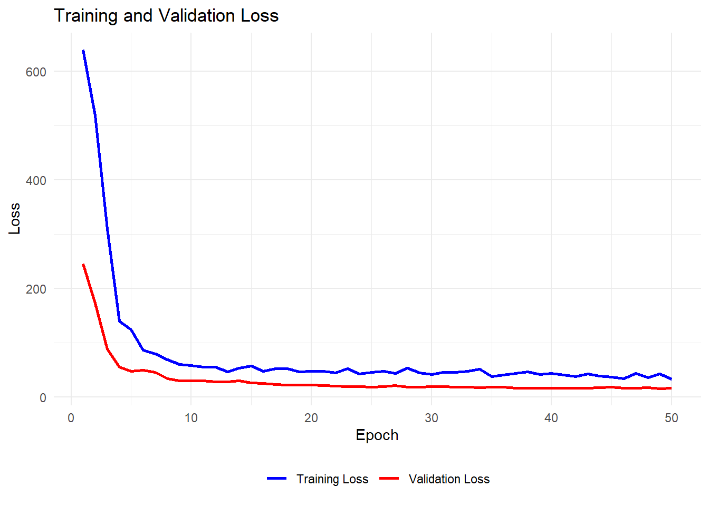
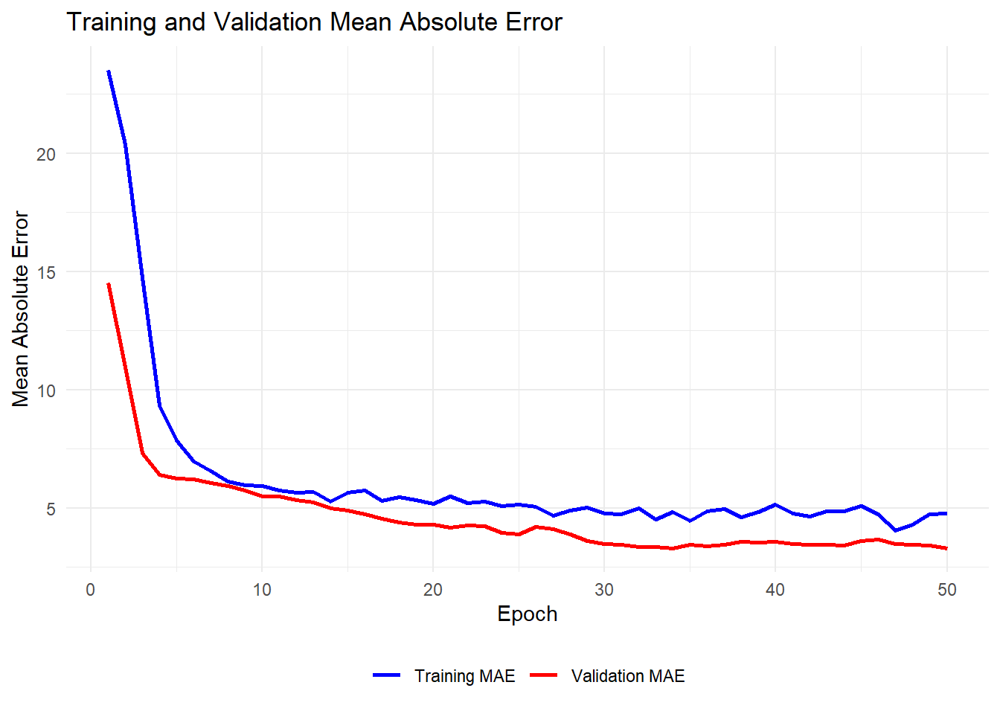

library(tensorflow)
library(keras)
library(ggplot2)Seminar 3
Overview
The goal of seminar 3 is to review the questions in Problem Set 2. Many of these questions do no require R and a selection will be discussed in person during class. Here, you will find an initial attempt at Q4.
Question 4: Please try working through the coding example in the week 6’s lecture note on the feedforward neural network.
Exercise 1 Try to run the following code on your own computer. You should be able to replicate the results in the slides for a 128-128-128 architecture. Next, modify the code to replicate other architectures.
Load packages and data
Updating R and installing
tensorflow
I had issues with some of the packages and needed to update to the latest version of R (4.2.2.). In addition, you will need to have tensorflow installed with Python on your computer. To do so, open the Anaconda Prompt and type pip install tensorflow.
We will use a data that comes with R: “Boston”. It 506 observations and 14 variables. The outcome we aim to predict is “medv”: the median value of owner occupied homes (in ’000s dollars). The number of predictors is \(p=13\).
# Load the Boston dataset
library(MASS)
data <- Boston Create training and testing database
As in Seminar 2, we need to split the data into a training and testing sample. Take note of the normalization step. We missed this step in Seminar 2.
set.seed(6)
x <- as.matrix(data[, -ncol(data)]) # All columns except the last (predictors)
y <- as.numeric(data[, ncol(data)]) # The last column
x <- scale(x) # Normalize the predictors
# Split the data
test_proportion <- 0.2 # Define the proportion of the test set
n <- nrow(data)
test_indices <- sample(1:n, size = floor(test_proportion * n))
train_indices <- setdiff(1:n, test_indices) # find all indices that are not in test_indices
x_train <- as.matrix(x[train_indices, ])
y_train <- as.numeric(y[train_indices])
x_test <- as.matrix(x[test_indices, ])
y_test <- as.numeric(y[test_indices])Execute Feedforward Neural Network
To begin, we will execute a model with a 128-128-128 architecture:
- width \(q=128\);
- depth \(r=3\);
- activation function \(g = ReLU\)
This means that the number of parameters (weights) will be,
\[ \underbrace{(13+1)\cdot128}_\text{Layer 1} + \underbrace{(128+1)\cdot128}_\text{Layer 2} + \underbrace{(128+1)\cdot128}_\text{Layer 3}+\underbrace{128+1}_\text{Output Layer} = 34,945 \]
# Input layer
input <- layer_input(shape = c(ncol(x_train)))
output <- input %>%
layer_dense(units = 128, activation = "relu") %>%
layer_dropout(rate = 0.5) %>%
layer_dense(units = 128, activation = "relu") %>%
layer_dropout(rate = 0.5) %>%
layer_dense(units = 128, activation = "relu") %>%
layer_dropout(rate = 0.5) %>%
layer_dense(units = 1) # Single output layer
model <- keras_model(inputs = input, outputs = output)
# Configure the model
tensorflow::tf$keras$Model$compile(
model,
loss = "mse", # Mean Squared Error
optimizer = tensorflow::tf$keras$optimizers$Adam(),
metrics = list("mae") # Mean Absolute Error
) # Train the model
history <- tensorflow::tf$keras$Model$fit(
model,
x = tensorflow::tf$convert_to_tensor(x_train), # Convert x to TensorFlow Tensor
y = tensorflow::tf$convert_to_tensor(y_train), # Convert y to TensorFlow Tensor
epochs = 50L, # Number of epochs, L indicates integer;
batch_size = 32L, # Batch size
validation_split = 0.2 # Use 20% of the data for validation
)Epoch 1/50
[1m 1/11[0m [32m━[0m[37m━━━━━━━━━━━━━━━━━━━[0m [1m29s[0m 3s/step - loss: 828.9982 - mae: 26.7995
[1m11/11[0m [32m━━━━━━━━━━━━━━━━━━━━[0m[37m[0m [1m3s[0m 36ms/step - loss: 696.7134 - mae: 24.4449 - val_loss: 240.3061 - val_mae: 14.5130
Epoch 2/50
[1m 1/11[0m [32m━[0m[37m━━━━━━━━━━━━━━━━━━━[0m [1m0s[0m 32ms/step - loss: 485.6781 - mae: 20.4724
[1m11/11[0m [32m━━━━━━━━━━━━━━━━━━━━[0m[37m[0m [1m0s[0m 10ms/step - loss: 506.1240 - mae: 20.5483 - val_loss: 156.2215 - val_mae: 10.9791
Epoch 3/50
[1m 1/11[0m [32m━[0m[37m━━━━━━━━━━━━━━━━━━━[0m [1m0s[0m 18ms/step - loss: 467.8419 - mae: 19.3198
[1m11/11[0m [32m━━━━━━━━━━━━━━━━━━━━[0m[37m[0m [1m0s[0m 11ms/step - loss: 338.5060 - mae: 15.9255 - val_loss: 77.8477 - val_mae: 7.3119
Epoch 4/50
[1m 1/11[0m [32m━[0m[37m━━━━━━━━━━━━━━━━━━━[0m [1m0s[0m 32ms/step - loss: 235.1049 - mae: 12.3651
[1m11/11[0m [32m━━━━━━━━━━━━━━━━━━━━[0m[37m[0m [1m0s[0m 9ms/step - loss: 172.8891 - mae: 10.1096 - val_loss: 60.7516 - val_mae: 6.3970
Epoch 5/50
[1m 1/11[0m [32m━[0m[37m━━━━━━━━━━━━━━━━━━━[0m [1m0s[0m 32ms/step - loss: 112.8865 - mae: 8.2149
[1m11/11[0m [32m━━━━━━━━━━━━━━━━━━━━[0m[37m[0m [1m0s[0m 10ms/step - loss: 128.8596 - mae: 8.3523 - val_loss: 58.7740 - val_mae: 6.2600
Epoch 6/50
[1m 1/11[0m [32m━[0m[37m━━━━━━━━━━━━━━━━━━━[0m [1m0s[0m 18ms/step - loss: 64.5152 - mae: 5.8228
[1m11/11[0m [32m━━━━━━━━━━━━━━━━━━━━[0m[37m[0m [1m0s[0m 10ms/step - loss: 89.1932 - mae: 7.0035 - val_loss: 57.6571 - val_mae: 6.2084
Epoch 7/50
[1m 1/11[0m [32m━[0m[37m━━━━━━━━━━━━━━━━━━━[0m [1m0s[0m 32ms/step - loss: 86.0183 - mae: 6.4813
[1m11/11[0m [32m━━━━━━━━━━━━━━━━━━━━[0m[37m[0m [1m0s[0m 10ms/step - loss: 82.5929 - mae: 6.7389 - val_loss: 54.4164 - val_mae: 6.0528
Epoch 8/50
[1m 1/11[0m [32m━[0m[37m━━━━━━━━━━━━━━━━━━━[0m [1m0s[0m 28ms/step - loss: 119.3588 - mae: 8.0595
[1m11/11[0m [32m━━━━━━━━━━━━━━━━━━━━[0m[37m[0m [1m0s[0m 10ms/step - loss: 76.9607 - mae: 6.2320 - val_loss: 51.6954 - val_mae: 5.9356
Epoch 9/50
[1m 1/11[0m [32m━[0m[37m━━━━━━━━━━━━━━━━━━━[0m [1m0s[0m 37ms/step - loss: 68.3912 - mae: 6.3936
[1m11/11[0m [32m━━━━━━━━━━━━━━━━━━━━[0m[37m[0m [1m0s[0m 10ms/step - loss: 63.6838 - mae: 5.9332 - val_loss: 48.0809 - val_mae: 5.7368
Epoch 10/50
[1m 1/11[0m [32m━[0m[37m━━━━━━━━━━━━━━━━━━━[0m [1m0s[0m 16ms/step - loss: 41.8643 - mae: 4.5271
[1m11/11[0m [32m━━━━━━━━━━━━━━━━━━━━[0m[37m[0m [1m0s[0m 11ms/step - loss: 65.1658 - mae: 5.8820 - val_loss: 42.6633 - val_mae: 5.4849
Epoch 11/50
[1m 1/11[0m [32m━[0m[37m━━━━━━━━━━━━━━━━━━━[0m [1m0s[0m 16ms/step - loss: 55.2878 - mae: 5.9920
[1m11/11[0m [32m━━━━━━━━━━━━━━━━━━━━[0m[37m[0m [1m0s[0m 10ms/step - loss: 56.8920 - mae: 5.7231 - val_loss: 42.9034 - val_mae: 5.4986
Epoch 12/50
[1m 1/11[0m [32m━[0m[37m━━━━━━━━━━━━━━━━━━━[0m [1m0s[0m 32ms/step - loss: 34.2518 - mae: 4.1092
[1m11/11[0m [32m━━━━━━━━━━━━━━━━━━━━[0m[37m[0m [1m0s[0m 11ms/step - loss: 55.4360 - mae: 5.4036 - val_loss: 39.7168 - val_mae: 5.3330
Epoch 13/50
[1m 1/11[0m [32m━[0m[37m━━━━━━━━━━━━━━━━━━━[0m [1m0s[0m 32ms/step - loss: 30.8093 - mae: 4.4471
[1m11/11[0m [32m━━━━━━━━━━━━━━━━━━━━[0m[37m[0m [1m0s[0m 10ms/step - loss: 53.7140 - mae: 5.3846 - val_loss: 38.3282 - val_mae: 5.2531
Epoch 14/50
[1m 1/11[0m [32m━[0m[37m━━━━━━━━━━━━━━━━━━━[0m [1m0s[0m 23ms/step - loss: 50.5549 - mae: 6.1205
[1m11/11[0m [32m━━━━━━━━━━━━━━━━━━━━[0m[37m[0m [1m0s[0m 9ms/step - loss: 49.5176 - mae: 5.2581 - val_loss: 34.5016 - val_mae: 5.0028
Epoch 15/50
[1m 1/11[0m [32m━[0m[37m━━━━━━━━━━━━━━━━━━━[0m [1m0s[0m 32ms/step - loss: 82.0992 - mae: 5.7872
[1m11/11[0m [32m━━━━━━━━━━━━━━━━━━━━[0m[37m[0m [1m0s[0m 10ms/step - loss: 58.7970 - mae: 5.6111 - val_loss: 33.2052 - val_mae: 4.9088
Epoch 16/50
[1m 1/11[0m [32m━[0m[37m━━━━━━━━━━━━━━━━━━━[0m [1m0s[0m 32ms/step - loss: 70.3703 - mae: 6.8657
[1m11/11[0m [32m━━━━━━━━━━━━━━━━━━━━[0m[37m[0m [1m0s[0m 13ms/step - loss: 63.3173 - mae: 6.0147 - val_loss: 30.9935 - val_mae: 4.7512
Epoch 17/50
[1m 1/11[0m [32m━[0m[37m━━━━━━━━━━━━━━━━━━━[0m [1m0s[0m 38ms/step - loss: 39.8774 - mae: 5.1131
[1m11/11[0m [32m━━━━━━━━━━━━━━━━━━━━[0m[37m[0m [1m0s[0m 11ms/step - loss: 48.6401 - mae: 5.2498 - val_loss: 28.6566 - val_mae: 4.5632
Epoch 18/50
[1m 1/11[0m [32m━[0m[37m━━━━━━━━━━━━━━━━━━━[0m [1m0s[0m 48ms/step - loss: 87.4348 - mae: 7.1489
[1m11/11[0m [32m━━━━━━━━━━━━━━━━━━━━[0m[37m[0m [1m0s[0m 9ms/step - loss: 63.3734 - mae: 5.9585 - val_loss: 27.1301 - val_mae: 4.4098
Epoch 19/50
[1m 1/11[0m [32m━[0m[37m━━━━━━━━━━━━━━━━━━━[0m [1m0s[0m 32ms/step - loss: 52.7319 - mae: 4.7154
[1m11/11[0m [32m━━━━━━━━━━━━━━━━━━━━[0m[37m[0m [1m0s[0m 10ms/step - loss: 50.1812 - mae: 5.2395 - val_loss: 25.6724 - val_mae: 4.2902
Epoch 20/50
[1m 1/11[0m [32m━[0m[37m━━━━━━━━━━━━━━━━━━━[0m [1m0s[0m 32ms/step - loss: 42.2463 - mae: 5.2852
[1m11/11[0m [32m━━━━━━━━━━━━━━━━━━━━[0m[37m[0m [1m0s[0m 10ms/step - loss: 46.9262 - mae: 5.1742 - val_loss: 26.0209 - val_mae: 4.3128
Epoch 21/50
[1m 1/11[0m [32m━[0m[37m━━━━━━━━━━━━━━━━━━━[0m [1m0s[0m 32ms/step - loss: 73.2043 - mae: 6.2381
[1m11/11[0m [32m━━━━━━━━━━━━━━━━━━━━[0m[37m[0m [1m0s[0m 9ms/step - loss: 55.0064 - mae: 5.5678 - val_loss: 26.0519 - val_mae: 4.1933
Epoch 22/50
[1m 1/11[0m [32m━[0m[37m━━━━━━━━━━━━━━━━━━━[0m [1m0s[0m 32ms/step - loss: 42.4103 - mae: 5.1491
[1m11/11[0m [32m━━━━━━━━━━━━━━━━━━━━[0m[37m[0m [1m0s[0m 9ms/step - loss: 43.5788 - mae: 5.0575 - val_loss: 25.3584 - val_mae: 4.2685
Epoch 23/50
[1m 1/11[0m [32m━[0m[37m━━━━━━━━━━━━━━━━━━━[0m [1m0s[0m 30ms/step - loss: 45.9861 - mae: 5.2918
[1m11/11[0m [32m━━━━━━━━━━━━━━━━━━━━[0m[37m[0m [1m0s[0m 10ms/step - loss: 45.1830 - mae: 5.1560 - val_loss: 25.1599 - val_mae: 4.2469
Epoch 24/50
[1m 1/11[0m [32m━[0m[37m━━━━━━━━━━━━━━━━━━━[0m [1m0s[0m 32ms/step - loss: 55.5890 - mae: 6.0120
[1m11/11[0m [32m━━━━━━━━━━━━━━━━━━━━[0m[37m[0m [1m0s[0m 10ms/step - loss: 47.9821 - mae: 5.3942 - val_loss: 23.5981 - val_mae: 3.9713
Epoch 25/50
[1m 1/11[0m [32m━[0m[37m━━━━━━━━━━━━━━━━━━━[0m [1m0s[0m 18ms/step - loss: 21.9316 - mae: 3.8638
[1m11/11[0m [32m━━━━━━━━━━━━━━━━━━━━[0m[37m[0m [1m0s[0m 11ms/step - loss: 41.3733 - mae: 4.8391 - val_loss: 23.3300 - val_mae: 3.8830
Epoch 26/50
[1m 1/11[0m [32m━[0m[37m━━━━━━━━━━━━━━━━━━━[0m [1m0s[0m 32ms/step - loss: 52.2922 - mae: 5.6303
[1m11/11[0m [32m━━━━━━━━━━━━━━━━━━━━[0m[37m[0m [1m0s[0m 10ms/step - loss: 44.2808 - mae: 5.1323 - val_loss: 25.1359 - val_mae: 4.2120
Epoch 27/50
[1m 1/11[0m [32m━[0m[37m━━━━━━━━━━━━━━━━━━━[0m [1m0s[0m 30ms/step - loss: 48.1420 - mae: 5.4344
[1m11/11[0m [32m━━━━━━━━━━━━━━━━━━━━[0m[37m[0m [1m0s[0m 10ms/step - loss: 39.9781 - mae: 4.8838 - val_loss: 24.6868 - val_mae: 4.1166
Epoch 28/50
[1m 1/11[0m [32m━[0m[37m━━━━━━━━━━━━━━━━━━━[0m [1m0s[0m 21ms/step - loss: 58.7689 - mae: 5.7272
[1m11/11[0m [32m━━━━━━━━━━━━━━━━━━━━[0m[37m[0m [1m0s[0m 10ms/step - loss: 45.6897 - mae: 5.0262 - val_loss: 22.5417 - val_mae: 3.8875
Epoch 29/50
[1m 1/11[0m [32m━[0m[37m━━━━━━━━━━━━━━━━━━━[0m [1m0s[0m 16ms/step - loss: 53.9863 - mae: 5.6481
[1m11/11[0m [32m━━━━━━━━━━━━━━━━━━━━[0m[37m[0m [1m0s[0m 10ms/step - loss: 52.3501 - mae: 5.1761 - val_loss: 20.5138 - val_mae: 3.5982
Epoch 30/50
[1m 1/11[0m [32m━[0m[37m━━━━━━━━━━━━━━━━━━━[0m [1m0s[0m 32ms/step - loss: 53.2253 - mae: 5.5974
[1m11/11[0m [32m━━━━━━━━━━━━━━━━━━━━[0m[37m[0m [1m0s[0m 10ms/step - loss: 39.5537 - mae: 4.8709 - val_loss: 19.7742 - val_mae: 3.4903
Epoch 31/50
[1m 1/11[0m [32m━[0m[37m━━━━━━━━━━━━━━━━━━━[0m [1m0s[0m 28ms/step - loss: 42.7333 - mae: 4.4758
[1m11/11[0m [32m━━━━━━━━━━━━━━━━━━━━[0m[37m[0m [1m0s[0m 10ms/step - loss: 38.5375 - mae: 4.5885 - val_loss: 19.2339 - val_mae: 3.4463
Epoch 32/50
[1m 1/11[0m [32m━[0m[37m━━━━━━━━━━━━━━━━━━━[0m [1m0s[0m 32ms/step - loss: 58.7662 - mae: 5.4204
[1m11/11[0m [32m━━━━━━━━━━━━━━━━━━━━[0m[37m[0m [1m0s[0m 10ms/step - loss: 44.1589 - mae: 4.8778 - val_loss: 18.5946 - val_mae: 3.3618
Epoch 33/50
[1m 1/11[0m [32m━[0m[37m━━━━━━━━━━━━━━━━━━━[0m [1m0s[0m 32ms/step - loss: 31.9200 - mae: 3.9065
[1m11/11[0m [32m━━━━━━━━━━━━━━━━━━━━[0m[37m[0m [1m0s[0m 10ms/step - loss: 36.9730 - mae: 4.4024 - val_loss: 18.5529 - val_mae: 3.3760
Epoch 34/50
[1m 1/11[0m [32m━[0m[37m━━━━━━━━━━━━━━━━━━━[0m [1m0s[0m 32ms/step - loss: 38.6272 - mae: 4.8657
[1m11/11[0m [32m━━━━━━━━━━━━━━━━━━━━[0m[37m[0m [1m0s[0m 11ms/step - loss: 39.3167 - mae: 4.7235 - val_loss: 18.3495 - val_mae: 3.3064
Epoch 35/50
[1m 1/11[0m [32m━[0m[37m━━━━━━━━━━━━━━━━━━━[0m [1m0s[0m 32ms/step - loss: 63.9224 - mae: 6.0767
[1m11/11[0m [32m━━━━━━━━━━━━━━━━━━━━[0m[37m[0m [1m0s[0m 12ms/step - loss: 37.2537 - mae: 4.6267 - val_loss: 19.8758 - val_mae: 3.4593
Epoch 36/50
[1m 1/11[0m [32m━[0m[37m━━━━━━━━━━━━━━━━━━━[0m [1m0s[0m 32ms/step - loss: 58.0719 - mae: 5.6993
[1m11/11[0m [32m━━━━━━━━━━━━━━━━━━━━[0m[37m[0m [1m0s[0m 11ms/step - loss: 47.4730 - mae: 5.1456 - val_loss: 18.9531 - val_mae: 3.3830
Epoch 37/50
[1m 1/11[0m [32m━[0m[37m━━━━━━━━━━━━━━━━━━━[0m [1m0s[0m 32ms/step - loss: 59.9648 - mae: 5.9595
[1m11/11[0m [32m━━━━━━━━━━━━━━━━━━━━[0m[37m[0m [1m0s[0m 11ms/step - loss: 47.6630 - mae: 5.2752 - val_loss: 19.6042 - val_mae: 3.4551
Epoch 38/50
[1m 1/11[0m [32m━[0m[37m━━━━━━━━━━━━━━━━━━━[0m [1m0s[0m 32ms/step - loss: 31.1966 - mae: 4.2508
[1m11/11[0m [32m━━━━━━━━━━━━━━━━━━━━[0m[37m[0m [1m0s[0m 10ms/step - loss: 34.8387 - mae: 4.5657 - val_loss: 20.0726 - val_mae: 3.5817
Epoch 39/50
[1m 1/11[0m [32m━[0m[37m━━━━━━━━━━━━━━━━━━━[0m [1m0s[0m 27ms/step - loss: 24.7697 - mae: 4.0582
[1m11/11[0m [32m━━━━━━━━━━━━━━━━━━━━[0m[37m[0m [1m0s[0m 10ms/step - loss: 38.2497 - mae: 4.6618 - val_loss: 19.8169 - val_mae: 3.5626
Epoch 40/50
[1m 1/11[0m [32m━[0m[37m━━━━━━━━━━━━━━━━━━━[0m [1m0s[0m 32ms/step - loss: 69.3482 - mae: 5.9674
[1m11/11[0m [32m━━━━━━━━━━━━━━━━━━━━[0m[37m[0m [1m0s[0m 10ms/step - loss: 54.4308 - mae: 5.4092 - val_loss: 20.0639 - val_mae: 3.5869
Epoch 41/50
[1m 1/11[0m [32m━[0m[37m━━━━━━━━━━━━━━━━━━━[0m [1m0s[0m 32ms/step - loss: 65.1053 - mae: 5.6592
[1m11/11[0m [32m━━━━━━━━━━━━━━━━━━━━[0m[37m[0m [1m0s[0m 10ms/step - loss: 45.1876 - mae: 4.9635 - val_loss: 19.1346 - val_mae: 3.4901
Epoch 42/50
[1m 1/11[0m [32m━[0m[37m━━━━━━━━━━━━━━━━━━━[0m [1m0s[0m 32ms/step - loss: 28.5042 - mae: 4.4145
[1m11/11[0m [32m━━━━━━━━━━━━━━━━━━━━[0m[37m[0m [1m0s[0m 10ms/step - loss: 38.7856 - mae: 4.7168 - val_loss: 19.2993 - val_mae: 3.4498
Epoch 43/50
[1m 1/11[0m [32m━[0m[37m━━━━━━━━━━━━━━━━━━━[0m [1m0s[0m 28ms/step - loss: 59.1926 - mae: 5.9563
[1m11/11[0m [32m━━━━━━━━━━━━━━━━━━━━[0m[37m[0m [1m0s[0m 10ms/step - loss: 43.9449 - mae: 5.1178 - val_loss: 19.2580 - val_mae: 3.4416
Epoch 44/50
[1m 1/11[0m [32m━[0m[37m━━━━━━━━━━━━━━━━━━━[0m [1m0s[0m 32ms/step - loss: 61.0170 - mae: 5.4739
[1m11/11[0m [32m━━━━━━━━━━━━━━━━━━━━[0m[37m[0m [1m0s[0m 10ms/step - loss: 42.4064 - mae: 4.9163 - val_loss: 18.8079 - val_mae: 3.4198
Epoch 45/50
[1m 1/11[0m [32m━[0m[37m━━━━━━━━━━━━━━━━━━━[0m [1m0s[0m 32ms/step - loss: 24.5396 - mae: 3.9671
[1m11/11[0m [32m━━━━━━━━━━━━━━━━━━━━[0m[37m[0m [1m0s[0m 8ms/step - loss: 41.4317 - mae: 4.8053 - val_loss: 20.0648 - val_mae: 3.6065
Epoch 46/50
[1m 1/11[0m [32m━[0m[37m━━━━━━━━━━━━━━━━━━━[0m [1m0s[0m 32ms/step - loss: 42.3646 - mae: 5.3227
[1m11/11[0m [32m━━━━━━━━━━━━━━━━━━━━[0m[37m[0m [1m0s[0m 10ms/step - loss: 36.4497 - mae: 4.6064 - val_loss: 20.4175 - val_mae: 3.6712
Epoch 47/50
[1m 1/11[0m [32m━[0m[37m━━━━━━━━━━━━━━━━━━━[0m [1m0s[0m 32ms/step - loss: 20.4261 - mae: 3.3189
[1m11/11[0m [32m━━━━━━━━━━━━━━━━━━━━[0m[37m[0m [1m0s[0m 10ms/step - loss: 26.3275 - mae: 3.8974 - val_loss: 19.3878 - val_mae: 3.4986
Epoch 48/50
[1m 1/11[0m [32m━[0m[37m━━━━━━━━━━━━━━━━━━━[0m [1m0s[0m 32ms/step - loss: 37.2453 - mae: 4.6537
[1m11/11[0m [32m━━━━━━━━━━━━━━━━━━━━[0m[37m[0m [1m0s[0m 10ms/step - loss: 34.0098 - mae: 4.3087 - val_loss: 19.1585 - val_mae: 3.4617
Epoch 49/50
[1m 1/11[0m [32m━[0m[37m━━━━━━━━━━━━━━━━━━━[0m [1m0s[0m 34ms/step - loss: 40.8390 - mae: 5.2471
[1m11/11[0m [32m━━━━━━━━━━━━━━━━━━━━[0m[37m[0m [1m0s[0m 11ms/step - loss: 39.4001 - mae: 4.8075 - val_loss: 18.6411 - val_mae: 3.4188
Epoch 50/50
[1m 1/11[0m [32m━[0m[37m━━━━━━━━━━━━━━━━━━━[0m [1m0s[0m 31ms/step - loss: 46.5221 - mae: 5.3998
[1m11/11[0m [32m━━━━━━━━━━━━━━━━━━━━[0m[37m[0m [1m0s[0m 13ms/step - loss: 41.9976 - mae: 4.9848 - val_loss: 17.3732 - val_mae: 3.3100# Predictions
predictions <- tensorflow::tf$keras$Model$predict(model, tensorflow::tf$convert_to_tensor(x_test))
[1m1/4[0m [32m━━━━━[0m[37m━━━━━━━━━━━━━━━[0m [1m0s[0m 93ms/step
[1m4/4[0m [32m━━━━━━━━━━━━━━━━━━━━[0m[37m[0m [1m0s[0m 22ms/step
[1m4/4[0m [32m━━━━━━━━━━━━━━━━━━━━[0m[37m[0m [1m0s[0m 27ms/step# Print the result
tensorflow::tf$keras$Model$summary(model)Model: "functional"
┌─────────────────────────────────┬────────────────────────┬───────────────┐
│ Layer (type) │ Output Shape │ Param # │
├─────────────────────────────────┼────────────────────────┼───────────────┤
│ input_layer (InputLayer) │ (None, 13) │ 0 │
├─────────────────────────────────┼────────────────────────┼───────────────┤
│ dense_3 (Dense) │ (None, 128) │ 1,792 │
├─────────────────────────────────┼────────────────────────┼───────────────┤
│ dropout_2 (Dropout) │ (None, 128) │ 0 │
├─────────────────────────────────┼────────────────────────┼───────────────┤
│ dense_2 (Dense) │ (None, 128) │ 16,512 │
├─────────────────────────────────┼────────────────────────┼───────────────┤
│ dropout_1 (Dropout) │ (None, 128) │ 0 │
├─────────────────────────────────┼────────────────────────┼───────────────┤
│ dense_1 (Dense) │ (None, 128) │ 16,512 │
├─────────────────────────────────┼────────────────────────┼───────────────┤
│ dropout (Dropout) │ (None, 128) │ 0 │
├─────────────────────────────────┼────────────────────────┼───────────────┤
│ dense (Dense) │ (None, 1) │ 129 │
└─────────────────────────────────┴────────────────────────┴───────────────┘
Total params: 104,837 (409.52 KB)
Trainable params: 34,945 (136.50 KB)
Non-trainable params: 0 (0.00 B)
Optimizer params: 69,892 (273.02 KB)Extract the final training and validation loss
final_training_loss <- history$history$loss[length(history$history$loss)]
final_validation_loss <- history$history$val_loss[length(history$history$val_loss)]
cat("Final Training Loss:", final_training_loss, "\n")Final Training Loss: 38.97912 cat("Final Validation Loss:", final_validation_loss, "\n")Final Validation Loss: 17.3732 Visualize the results
Convert history to a data frame with epoch numbers
history_df <- as.data.frame(history$history)
history_df$epoch <- seq_len(nrow(history_df))Plot training and validation loss
ggplot(history_df, aes(x = epoch)) +
geom_line(aes(y = loss, color = "Training Loss"), linewidth = 1) +
geom_line(aes(y = val_loss, color = "Validation Loss"), linewidth = 1) +
labs(
title = "Training and Validation Loss",
x = "Epoch",
y = "Loss"
) +
scale_color_manual(values = c("blue", "red")) +
theme_minimal() +
theme(
legend.title = element_blank(),
legend.position = "bottom" # Options: "top", "bottom", "left", "right", or c(x, y) for custom
)
Plot training and validation mean absolute error (MAE)
ggplot(history_df, aes(x = epoch)) +
geom_line(aes(y = mae, color = "Training MAE"), linewidth = 1) +
geom_line(aes(y = val_mae, color = "Validation MAE"), linewidth = 1) +
labs(
title = "Training and Validation Mean Absolute Error",
x = "Epoch",
y = "Mean Absolute Error"
) +
scale_color_manual(values = c("blue", "red")) +
theme_minimal() +
theme(
legend.title = element_blank(),
legend.position = "bottom" # Options: "top", "bottom", "left", "right", or c(x, y) for custom
)